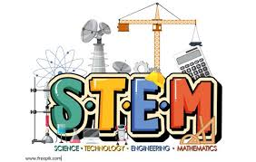
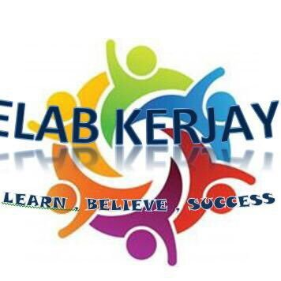
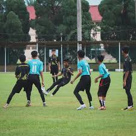
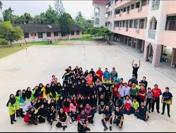
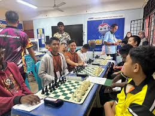

SMKRLNR Tech

Melahirkan generasi yang seimbang dari segi akademik, sukan, dan kepimpinan digital.
Tempat pemupukan bakat murid dalam bidang asas pengaturcaraan (coding), pembinaan laman web, dan asas teknologi robotik masa kini.
Menggabungkan elemen Sains, Teknologi, Kejuruteraan, dan Matematik menerusi eksperimen dan projek inovasi yang mencabar minda kreatifik.

Membantu pelajar mengenali potensi diri, membina kemahiran insaniah (soft skills), serta pendedahan awal mengenai hala tuju kerjaya masa depan.

Melatih disiplin, kerjasama pasukan, dan taktikal bola sepak moden demi melahirkan atlet sekolah yang berdaya saing tinggi.

Fokus kepada teknik pukulan, ketangkasan pergerakan kaki, dan strategi perlawanan perseorangan mahupun beregu.

Mengasah ketajaman strategi, analisis situasi pantas, dan kesabaran tinggi melalui simulasi perlawanan catur peringkat sekolah.
